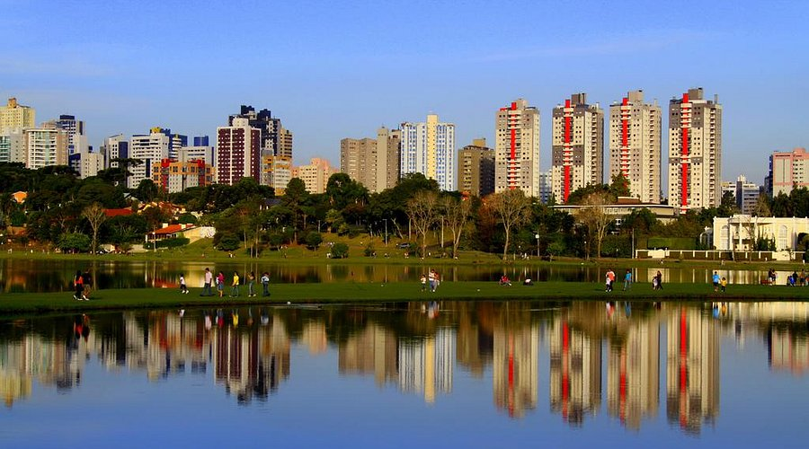

O Barigui, maior parque de Curitiba, ocupa 140 hectares do território de quatro bairros e fica aberto ininterruptamente, todos os dias do ano. É imbatível na preferência dos curitibanos – mesmo em dias de frio ou garoa e neblina - para desfrutar da natureza, fazer passeios, e principalmente para atividades esportivas
O Parque Barigui é o maior e mais famoso parque urbano de Curitiba, Paraná.Com 140 hectares, ele conta com um enorme lago, pistas de caminhada, bosques de mata nativa e a presença marcante de capivaras, sendo o principal ponto de encontro da cidade para lazer e esporte.

historia do parque barigui
O Parque Barigui surgiu em Curitiba, às margens do rio Barigui, e foi criado em 1972 para ajudar no controle das enchentes e preservar áreas verdes. Sua criação esteve ligada ao planejamento urbano do IPPUC e à gestão de Jaime Lerner, com participação de urbanistas e engenheiros. Com o tempo, tornou-se um importante espaço de lazer, esporte, preservação ambiental e convivência para os curitibanos.

O Parque Barigui é o maior símbolo da identidade cultural de Curitiba, servindo como palco verde para a arte, o turismo e a economia criativa paranaense.Identidade e História: A paisagem com o skyline e as capivaras moldou a cultura pop local. O nome indígena conecta a cidade às suas origens.Espaços Culturais: Abriga o Museu do Automóvel, a Casa da Leitura Manoel Carlos Karam e monumentos de artistas locais, como a Escultura da Bicicleta Gigante.Onde Reconhecer Hoje: No Centro de Eventos Positivo, que sedia grandes feiras de arte e artesanato, como a FEIARTE e o Quilt & Craft Show, além de shows e festivais ao ar livre.
curiosidades
curiosidades 1
Visão geral criada por IA O Parque Barigui é o mais famoso de Curitiba. Ele tem 1,4 milhão de metros quadrados (140 hectares) espalhados por quatro bairros. O nome vem do tupi-guarani e quer dizer "rio do fruto espinhoso", por causa das pinhas das araucárias.
curiosidades 2
Fazenda antiga: O espaço era uma antiga fazenda do desbravador Mateus Martins Leme e virou parque em 1972 pelo prefeito Jaime Lerner.Disfarce ecológico: Na época, o governo não dava dinheiro para lazer, então o projeto foi aprovado com foco em "contenção de cheias".